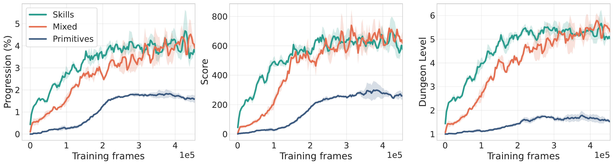

Semantic actions
Skills correspond to recognizable behaviors such as exploration, combat, equipment management, and terrain interaction.
Code-based skills for long-horizon language agents
We study the benefits and tradeoffs of using low-level primitives, higher-level code skills, or both for long-horizon language agents.
Abstract
Acting and learning in long-horizon environments remains challenging for language agents, especially on tasks requiring low-level action control such as games. Primitive action control often provides poor grounding for language models and, when combined with long horizons, can be prohibitively expensive and hinder learning, exploration, and planning.
Inspired by work on agent interfaces and horizon reduction, we study the value of using higher-level, semantically meaningful code skills in addition to or instead of low-level primitives. We develop CodeHack, a rich library of code-based skills with natural-language descriptions, and compare agents that can only use primitive actions, only use semantic skills, or use both.
We evaluate these agents in three settings: zero-shot prompting, supervised fine-tuning, and reinforcement learning. Averaged across a broad zero-shot NetHack evaluation, skills provide over 3x improvement in game progression while cutting inference costs per episode by 86%. Mixed control retains much of this benefit while preserving a path back down to low-level actions, and in RL, skill-based agents learn significantly faster than agents acting on primitives.
Motivation
As language models transition into autonomous agents, they are increasingly tasked with complex, long-horizon problems, ranging from software engineering and computer use to embodied control. To succeed in these environments, agents must manage extended interactions, adapt to shifting contexts, and recover from inevitable errors, all while carefully managing their inference budgets.
Despite this, most agents are still forced to operate through low-level action interfaces, expanding simple behaviors into long sequences of brittle, error-prone decisions. Agentic coding systems make this tension concrete: if a coding agent had to generate one keystroke at a time, it would risk wasting its reasoning budget on mechanics rather than design. In practice, programmers and coding agents rely on functions, libraries, tools, and editor commands that package many low-level operations into semantically meaningful units.
This suggests a central question for long-horizon language agents: what are the benefits and tradeoffs of using primitive actions, higher-level skills, or both? We study this question through temporally extended code-based actions, or skills. Code-based skills are natural for language agents: they can be described in language, inspected as source code, executed cheaply on the CPU, and combined with primitive actions when finer control is needed.
We use NetHack as our main domain because it captures much of the structure of real long-horizon agentic tasks: agents must act under partial observability, adapt across changing contexts, recover from mistakes, and repeatedly switch among qualitatively different modes of behavior such as exploration, navigation, combat, resource management, and tool use. This complexity also makes pure skill abstraction incomplete in practice, motivating agents that can move flexibly up and down the abstraction ladder.
Method
CodeHack is a library of Python skills that sits between a controller and the NetHack or MiniHack environment. Each skill maps the current symbolic game state to a sequence of primitive commands, such as movement, inventory interactions, prompt responses, or combat actions. The controller still makes the high-level decision, but repeated low-level mechanics can run through cheap, inspectable code.
The same runtime exposes three action interfaces: primitive-only, skill-only, and mixed. This lets the paper compare abstraction levels while keeping the environment and evaluation protocol fixed. Skills return control when they finish, fail, trigger a panic handler such as damage or a newly reachable hostile monster, or make no progress, giving the outer controller a chance to choose another action.

Skills correspond to recognizable behaviors such as exploration, combat, equipment management, and terrain interaction.
Skills are reusable across many states and episodes, functioning as stable units of abstraction rather than narrow scripts.
The interface supports moving up and down the ladder, so skills accelerate long-horizon behavior without removing local intervention.
Experiments
The experiments evaluate the same action-interface choices in zero-shot prompting, supervised fine-tuning, and reinforcement learning. MiniHack provides controlled tasks for navigation, exploration, combat, item use, and subgoal sequencing, while NetHackScore-v0 serves as the main long-horizon testbed. The paper tracks MiniHack success rate and NetHack score, progression, dungeon depth, token use, and estimated inference cost.
Zero-Shot Gains
With GPT-5 on MiniHack, CodeHack skills improve success on every task and produce a 55 percentage-point average absolute gain over primitive control. Quest-Hard is the sharpest example: skill control reaches 25% success, while primitive control solves no episodes. In the broader NetHack sweep across 14 models and five model families, skill-only agents achieve 3.4x higher progression, 4.3x higher score, and about 2.7x deeper dungeon reach than primitive-only agents.

Left: MiniHack success rates for GPT-5. Right: NetHack milestone reach for GPT-5. Both plots present averages over 32 episodes per task.
Performance-Cost Frontier
Skills improve the frontier by replacing many expensive language-model decisions with CPU execution inside the CodeHack runtime. Across the zero-shot NetHack sweep, skill-based agents generally shift up and to the left: they reach deeper dungeon levels while using lower or comparable per-episode cost. Skill-only control reduces estimated cost by 86% and token use by 70% compared with primitives, while mixed control remains far stronger and cheaper than primitive-only play.

Each point corresponds to a model-interface pair and plots average dungeon level reached against average inference cost per episode. Skill-based agents define the strongest frontier, while mixed control is typically intermediate.
Faster Learning
PPO training on Llama-3.1-8B-Instruct and Qwen-3.5-4B shows that abstraction helps learned controllers too. Under the same training budget, skill-only control produces a 5.1x larger gain in dungeon level than primitive-only control, and mixed control reaches a 6.5x larger gain. Supervised fine-tuning on teacher trajectories followed by RL produces the strongest learned skill controllers reported in the paper, but the central pattern is already visible from RL alone: shorter effective horizons make learning faster.

Training curves compare action interfaces over the same PPO budget. Skill-based and mixed interfaces improve progression and dungeon depth faster than primitive-only control.
Rollouts
These examples show temporally extended code-based actions in familiar NetHack and MiniHack situations. They also illustrate why mixed control matters: high-level skills can accelerate repeated behaviors, but the controller still needs a path back to primitive actions when abstractions are insufficient.

The agent uses semantic exploration skills to traverse rooms, follow corridors, and keep progress moving across long episodes.

The controller alternates between reusable skills and local primitive actions when high-level routines need fine-grained correction.

MiniHack examples highlight targeted behaviors such as navigation, combat, item use, and exploration under controlled task layouts.
Citation
@misc{cupial2026abstractionladder,
title = {Up and Down the Abstraction Ladder: Code-Based Skills for Language Agents},
author = {Cupial, Bartlomiej and Tuyls, Jens and Wolczyk, Maciej and Paglieri, Davide and Klissarov, Martin and Eysenbach, Benjamin and Milos, Piotr and Narasimhan, Karthik R.},
year = {2026},
note = {Preprint}
}